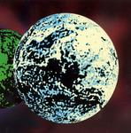

| Artist: | Solution Science Systems |
| Title: | Daemon Ex Machina |
| Label: | Smiley Jones Records SL010 |
| Length(s): | 53 minutes |
| Year(s) of release: | 2003 |
| Month of review: | [01/2004] |
| 1) | Work On Time - A Beginning | 4.38 |
| 2) | Science Is The Solution Pt. 1: The Revealing Solution Science Of God | 4.24 |
| 3) | Electrotrombonophone (ETP) | 4.30 |
| 4) | Tomorrow's Dream Today | 8.32 |
| 5) | Ein Mugg & Schrödinger's Cat | 1.10 |
| 6) | Static | 1.15 |
| 7) | A Thread In The Fabric Of Time | 1.47 |
| 8) | We Interrupt This Program | 6.08 |
| 9) | Hey, Butterfly | 5.00 |
| 10) | Photonic Quality | 3.53 |
| 11) | Work On Time - A Theme | 4.49 |
| 12) | The Heavy Fist Of Maxwell's Daemon | 6.44 |
That humour is not strange to these guys: Science Is The Solution Pt. 1: The Revealing Solution Science Of God opens with riffs from King Crimson (and not yet from Yes which you might expect). There is a nod to Yes hidden in there somewhere, tho. High energy riff rock played with lots of verve and finesse. Again very good.
Electrotrombonophone (ETP) is totally different: this is a catchy tune in the vein of the Buggles, but a bit more proggy. Later some Yes influences creep in, while the song stays definitely in the New Wave vein.
With Tomorrow's Dream Today we have come to the longest track on the album, so pay attention. Here we open with piano. The guitar playing is more funky here, but the piano that comes right in between is as melodic as can be. The vocals remind me a bit of Life In The Fast Lane by the Eagles. The chorus is more intimate, but also not as likable for some reason. Plenty of variation can be found on this one, also with the 'spoken' vocal intermezzo and the appealling instrumental section that follows: symphonic guitar work and keyboards. Very good.
Time for a few shorties: Ein Mugg & Schrödinger's Cat is mainly in Steve Howe style with a bit of jazz thrown in. Static is just samples with plenty of noise. A Thread In The Fabric Of Time is a melodic tune with light percussion and tinny synths dominating. Short, repetitive and memorable.
Back to the real work with We Interrupt This Program. The song opens with strumming acoustic guitar. The melodic hooks and changing time signatures make this into a typical progressive rock track, a bit rowdier than most likely enough.
With Hey, Butterfly I guess we have arrived at the Gaia theory. The opening riff sounds like Boston's More Than A Feeling. The continuation has elements of Twelfht Night's Creepshow, but this is something that is easily evoked, a kind of rhythmic interplay which always reminds me of them. I would not be surprised if the band did not even know them. While listening to this song I seem to hear ghosts of other songs all the time: War Pigs, the earlier mentioned More Than A Feeling and this is not the first song for this to happen. Is this citation or the unconscious working?
We continue with Photonic Quality which has a rather percussive feel. The style is quite strongly in a surf music vein, with sharp guitar work. Later the music becomes grander with synths and guitar, there is a bit of Rush in here, in their Villa Strangiato period here. Hereafter the tension of the best of KC kicks in. The repetitive guitar pattens are very Fripp.
Work On Time - A Theme opens with simply keyboards, building a kind of vague atmosphere. It stays like that throughout. Something entirely different then. The Heavy Fist Of Maxwell's Daemon is a meandering affair with some mellotronic keyboards giving the song an Anekdoten feel at times. However, the riffs dominate so it is better to think in terms of 21st Century Schizoid Man. But not as flashy. The rough vocals take some getting used to.